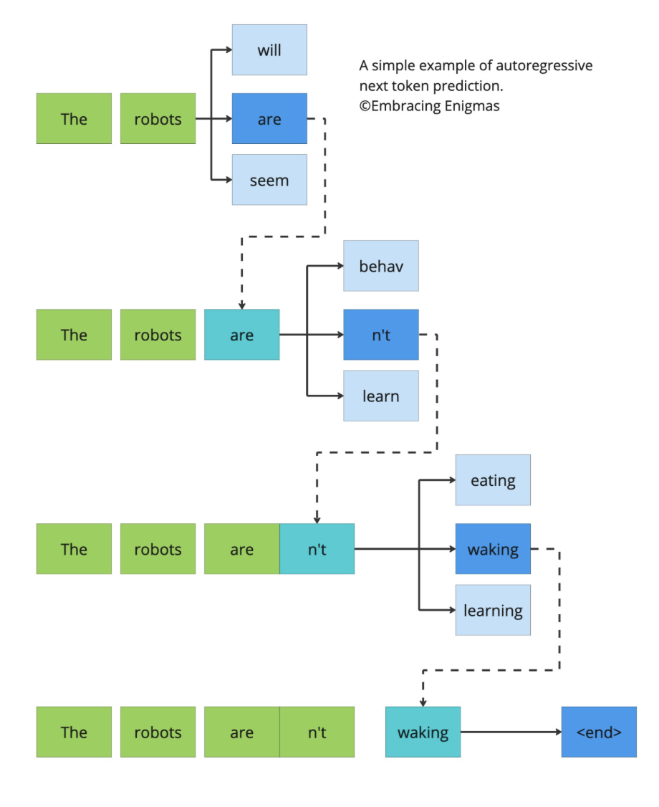
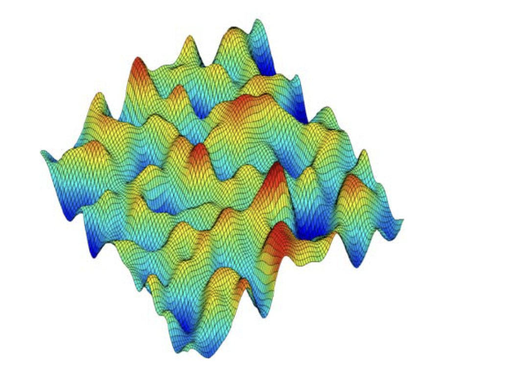
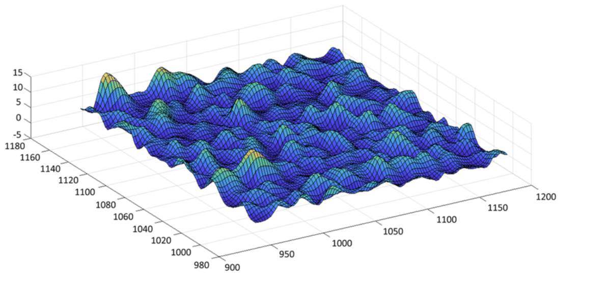

I am a domain expert in this topic. Not bragging. This is just somewhere I have spent months sitting with equations, breaking them, rebuilding them, trying to formalize what we are actually building. And before going further, I want to keep this very honest.
We often confuse predictive power with intelligence. Modern AI, especially token-based LLMs, is fundamentally a predictive engine. It learns a conditional distribution
and generates one token at a time. It works beautifully. It is astonishingly good at pattern continuation. But continuation is not cognition.
If we are serious about AGI, or even about long-horizon reasoning systems, we have to ask a deeper question. Is intelligence really just next-token prediction scaled up? Or is it something else? To me, intelligence is not continuation. Intelligence is connecting the dots under partial information. It is systems that Think about Thinking.
Autoregressive models like GPTs are sequential. They commit at every step. They generate one token, condition on it, then generate the next. It is like walking forward and burning the bridge behind you. Energy based models on the other hand are different. They do not walk. They settle.
Lets go through all the underlying stuffs around Token based Approaches and what they lacked which caused emergence of Energy Based Models.
Token Models: Local Probability Machines
Let us be clear about how token models operate. They optimize cross-entropy loss:
This means they maximize likelihood over sequences. They approximate a distribution over token strings.

Internally, they condition on previous tokens, maximize local probabilities, and generate sequentially. They do not explicitly model stability. They do not explicitly minimize inconsistency. They are incredible storytellers. But they do not "settle" into coherence — they just keep predicting the next most likely step.
There is no notion of a global energy that says: this entire configuration is internally contradictory.
Energy Based Models: Global Configuration Evaluators
Energy based models flip the perspective entirely. Instead of modeling probability over next tokens, they define an energy function over entire configurations:
Lower energy means more stable. Higher energy means unstable, inconsistent, noisy. Prediction becomes:
You are not guessing the next token. You are searching for a state that minimizes tension in the system.

This is fundamentally global. Autoregressive models move step by step. Energy based models evaluate the whole thing at once. They are not generators in the usual sense. They are stabilizers.
The Energy Landscape Intuition
The best way to think about this is geometrically. Imagine every possible state of the system as a point in a high dimensional space. Now define an energy over that space. You get a landscape. Valleys are stable patterns. Hills are unstable configurations. Deep basins are strong attractors. Flat regions are ambiguity.

Intelligence emerges when meaningful patterns become deep valleys and noise remains shallow and unstable. When you drop a noisy state into the landscape, dynamics push it downhill until it settles into a basin. That settling is reasoning.
PREDICTION IS CONVERGENCE.
What Energy Based Models Are Good At
When do energy models shine? They are naturally suited for denoising, pattern completion, constraint satisfaction, structured reasoning, and multi-variable consistency. Token models are excellent at continuation. Energy models are excellent at stabilization.
If your system needs to settle into coherence rather than just continue text, energy based approaches start to make sense.
The Core Mathematics
At the center of all this energy based thinking there is something almost embarrassingly simple. You define a scalar function over states. That is it. Call it energy, E(s). Low energy means the configuration is internally consistent. High energy means something does not add up. There is tension in the system, contradictions, instability, unresolved structure.
That shift alone changes the entire framing. Traditional models are obsessed with probability. They learn a conditional distribution and optimize cross entropy,
Everything is about likelihood. About predicting what comes next. Energy based systems do not ask what comes next. They ask what configuration makes the entire system most stable.
Instead of sampling tokens, the system evolves a state vector s. The dynamics follow gradient descent on the energy landscape,
In plain language, the state moves downhill. Wherever the energy decreases, that is where the system goes. If the landscape is shaped correctly, the state settles into meaningful basins. If the geometry is wrong, you get useless attractors or unstable wandering. Reasoning, in this view, is not continuation. It is tension reduction.
Now this is where free energy starts becoming important. Because once you scale these systems, you cannot just minimize raw energy. You also need to account for uncertainty. In statistical physics and variational inference, the free energy functional typically looks like
where q(s) is an approximate distribution over states and H(q) is its entropy. The first term encourages low energy configurations. The second term prevents collapse by rewarding uncertainty. This balance between structure and entropy is what makes free energy powerful.
In many structured systems, exact free energy is intractable because computing the partition function
is impossible in high dimensions. So we approximate.
This is where Bethe free energy comes in. In graphical models, the Bethe approximation rewrites the global free energy in terms of local beliefs and pairwise consistency constraints. Instead of solving a fully global normalization, you enforce consistency over nodes and edges of a factor graph. The Bethe free energy can be written schematically as
where b_i and b_ij are local and pairwise beliefs. It approximates the true free energy while keeping computations local. That idea matters because large structured energy systems cannot be optimized exactly. You need principled decompositions.
And that connects directly to CCCP. Many free energy formulations can be written as a difference of convex functions,
where F₁ is convex and F₂ is convex but subtracted, making the total objective nonconvex. The Concave Convex Procedure works by linearizing the concave part at each step and minimizing the resulting convex surrogate,
Each iteration guarantees descent in the original objective. No chaotic jumps. No uncontrolled oscillations. Just structured monotonic reduction.
So when I talk about shaping curvature, this is what I mean. You are not just defining an energy function. You are making sure that its geometry allows stable descent even under approximation. You are making sure the Hessian spectrum does not explode. You are making sure entropy terms and structural terms are balanced.
At scale, everything becomes approximation. Exact partition functions disappear. Exact inference disappears. What remains is geometry and how you navigate it. Energy gives you structure. Free energy introduces uncertainty into that structure. Bethe style approximations make the system tractable. CCCP gives you a stable optimization pathway through that approximated landscape.
When all of that aligns, the system does not just generate outputs. It settles into coherence.
And that, to me, is much closer to intelligence than just predicting the next token ever could be.
SLEB Engine at Ananta Research
Now let me explain this the way I actually feel it. SLEB stands for Self Learning Energy Based architecture — we introduced it formally in An Energy-Based Self-Learning Engine for Neuro-Symbolic Scientific Reasoning. But honestly, that name does not capture what it is. It feels less like a model and more like a living field.
There are no tokens being predicted step by step. Instead, there is a state vector living inside an energy landscape. When the system thinks, it does not emit words one at a time. It slides downhill in energy space. Low energy means coherence. High energy means contradiction.
Memory does not look like key-value storage. Memory contributes energy terms. Long-term knowledge bends the landscape. Recent reasoning reshapes local curvature.
Recall is not retrieval.
Recall is geometry.
Competitive normalization keeps magnitudes bounded. Patterns compete. Strong coherent signals suppress inconsistent ones. Then comes replay. When the system finds a stable trajectory, it reinforces it. It deepens that basin. Over time the landscape gets sculpted by its own successful reasoning.
And multi-timescale decay ensures it does not freeze or explode. It forgets transient noise while preserving structure. It does not generate text step by step. It settles into reasoning.
Limitations
Let us not romanticize this. Energy models struggle with high dimensional scaling, sampling inefficiency, expensive inference steps, partition function estimation, curvature control, and spurious minima.
Token models scale beautifully with GPU parallelism. Energy models often require iterative refinement. If the Hessian has bad curvature, you get flat regions or unstable minima. If the eigenspectrum is poorly shaped, convergence slows or becomes messy. This is not trivial engineering.
Where I Think This Goes
Energy models are not replacements for token models. They are complementary. Token models are storytellers. Energy models are stabilizers. One generates surface fluency. The other enforces deep structure.
The future likely lies in hybrid architectures — autoregressive layers for expressive generation, energy layers for global coherence, decay for abstraction, replay for consolidation.
If we want systems that do not just continue text but actually settle into internally consistent reasoning states, we need landscapes, not just likelihoods.
And that is where my head has been for the past few months.